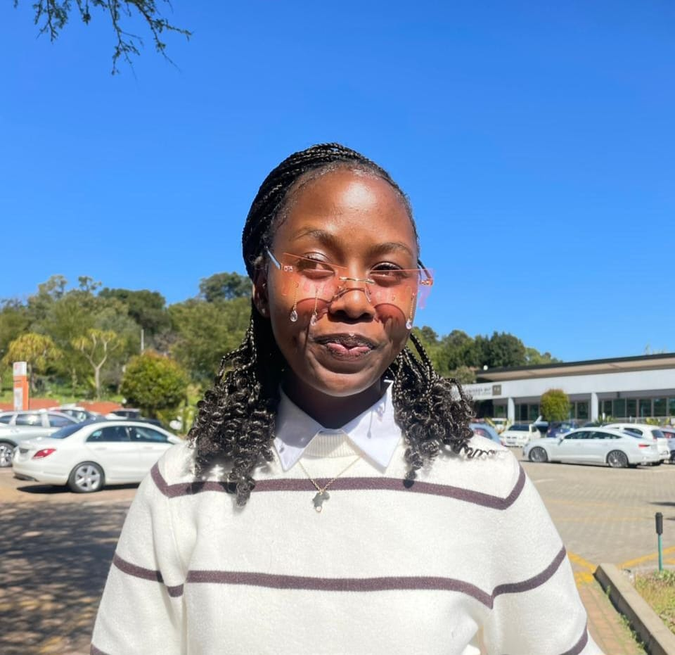
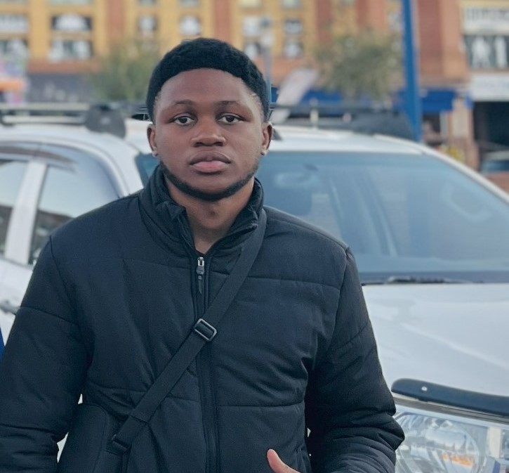
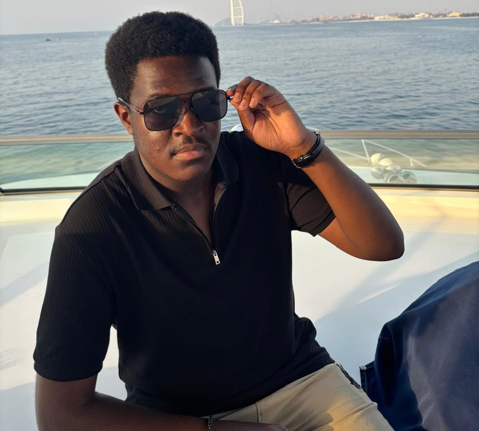

Meet The Development Team
Sabyoni Devs
Sabyoni Devs

Sthembile S. Sithole
Frontend Developer Lead
I
am a Business Information Technology student with a passion for
software development, innovation, and continuous growth. I enjoy building solutions that solve real-world
problems while exploring
emerging technologies and modern development practices. As a member of the SABYONI Devs Team, I collaborate with
talented individuals,
strengthen my technical skills, and contribute to projects that create meaningful value.My mission is simple: to
learn, innovate,
and build technology that makes a positive impact. With every project, I strive to grow as a developer, embrace
new challenges,
and create solutions that help shape the future.Code with purpose. Learn
without limits. Build for impact

Adivhaho Mudau
Documenter | Business Analyst
Hi, I'm Adivhaho Mudau, an IT student at the University
of Johannesburg (UJ), currently bridging the gap between tech and business at SABYONI Devs. As a future business
analyst, I'm poised to drive innovation and growth. My IT skills will serve as a strong foundation for my
analytical pursuits. Exciting times ahead!
Bontle Rapesioa
Figma Design Manager
Hi, I'm Bontle Rapesioa, a super curious and hardworking
student doing BIT . Always eager to grow, I am diving deep into C# coding, GUI design, and IT fundamentals,
while also exploring the world of creatives. I am on an exciting journey to become both a skilled programmer and
a brilliant software designer

Yana Makan
Project Lead | Database Manager
As the Database Manager for Sabyoni Devs,
I ensure our health app’s data is structured, secure, and seamlessly accessible. I design and manage databases
that support real-time functionality while maintaining integrity across all user interactions. My role bridges
technical precision with user trust, making sure every heartbeat of data flows reliably behind the scenes

Nathan Lumbwe
Full Stack Developer
I am a passionate developer with a solid base in Python
and now learning C# to support SABYONI Devs’ projects. I enjoy turning ideas into real apps and love learning
new technologies. My creativity, curiosity, and teamwork help me build quality solutions. At SABYONI Devs, I
bring energy, fresh ideas, and dedication. I see every project as a chance to grow.

Israel L. Kasatuka
Group Leader | Full Stack Developer
Hi, I'm Israel, the group leader
and
an aspiring developer with a strong interest in technology. While I have hands-on experience in Python and C#, I
am using these skills to solve problems and build creative solutions. Passionate about continuous learning, I am
working toward becoming a full-stack developer. As leader of SABYONI Devs, I guide the team with dedication and
collaboration.